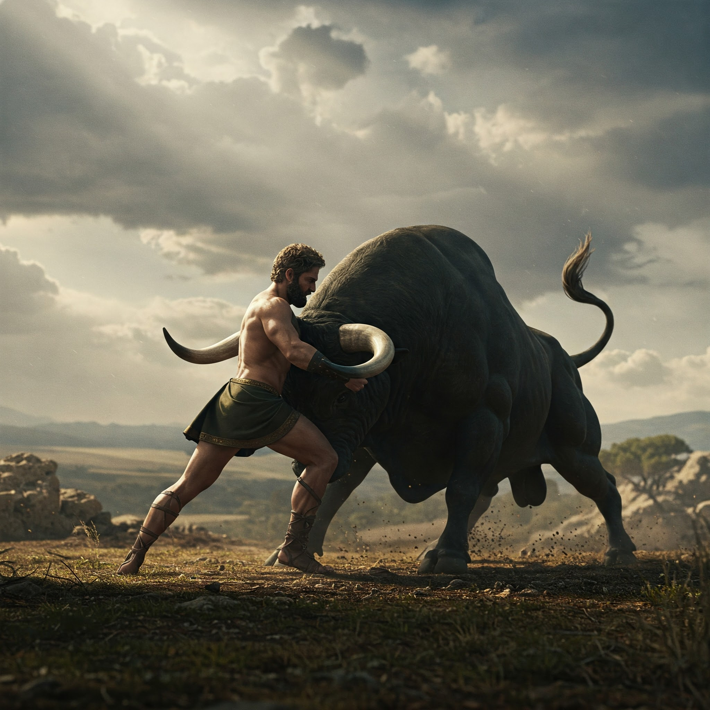

Las olas golpean con furia los acantilados de Creta. El aire huele a sal quemada y azufre. Delante de ti, los restos de un palacio destruido: columnas rotas, murales descascarados por el calor... y huellas de pezuñas que arden en la piedra.
"¡No te acerques!" grita un sacerdote, escondido tras un muro medio derretido. "Es el Toro de Poseidón, pero algo lo ha corrompido... ¡Sus ojos brillan como el inframundo!"
Un bramido retumba. De entre las llamas emerge la bestia: su pelaje blanco ahora manchado de hollín, sus cuernos goteando lava, y sus pisadas dejando charcos de fuego. No es un animal... es una maldición viviente.
¿Qué harás?
